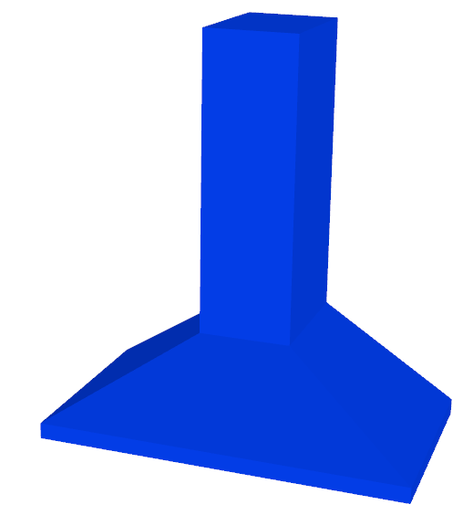

scene_synthesizer.procedural_assets.RangeHoodAsset
- class scene_synthesizer.procedural_assets.RangeHoodAsset(*args, **kwargs)
A range hood / extractor hood / kitchen hood asset.
- Parameters:
width (float, optional) – Width of the range hood. Defaults to 0.92.
depth (float, optional) – Depth of the range hood. Defaults to 0.51.
height (float, optional) – Height of the range hood. Defaults to 1.0.
duct_width (float, optional) – Width of the duct. Defaults to 0.23.
duct_depth (float, optional) – Depth of the duct. Defaults to 0.33.
duct_offset (tuple, optional) – Offset of the duct in the xy-plane. Defaults to (0, 0).
pyramid_height (float, optional) – Height of the pyramidically shaped blower box. Defaults to 0.22.
control_panel_height (float, optional) – Height of the control panel. Defaults to 0.04.
use_primitives (bool, optional) – Use primitve shapes only. Defaults to False.
- Raises:
ValueError – If duct_height + pyramid_height exceed the total height.
- static create_primitives(width, depth, height, duct_width, duct_depth, duct_offset, pyramid_height, control_panel_height)
- static create_mesh(width, depth, height, duct_width, duct_depth, duct_offset, pyramid_height, control_panel_height)
- classmethod random_size_params(seed=None, **kwargs)
- classmethod random_params(seed=None, **kwargs)
- classmethod random(seed=None, **kwargs)
- as_trimesh_scene(namespace='object', use_collision_geometry=True)
- compute_stable_poses(convexify=False, center_mass=None, sigma=0.0, n_samples=1, threshold=0.0, tolerance_zero_extent=1e-6, use_collision_geometry=True)
Wrapper for trimesh.poses.compute_stable_poses function.
- Parameters:
convexify (bool, optional) – Whether to use the convex hull of the object.
center_mass ((3,) float, optional) – The object center of mass. If None, this method assumes uniform density and watertightness and computes a center of mass explicitly. Defaults to None.
sigma (float, optional) – The covariance for the multivariate gaussian used to sample center of mass locations. Defaults to 0.0.
n_samples (int, optional) – The number of samples of the center of mass location. Defaults to 1.
threshold (float, optional) – The probability value at which to threshold returned stable poses. Defaults to 0.0.
tolerance_zero_extent (float, optional) – The threshold for considering a dimension to have zero length. In this case, trimesh.poses.compute_stable_poses gets caught in an infinite loop. We avoid this by specifying the stable poses to be along zero-length dimensions. Defaults to 1e-6.
use_collision_geometry (bool, optional) – Whether to use the collision geometry or visual geometry to calculate stable poses. Defaults to True.
- Returns:
The homogeneous matrices that transform the object to rest in a stable pose. probs ((n,) float): Probability in (0, 1) for each pose
- Return type:
transforms ((n, 4, 4) float)
- get_bounds(query=None, frame=None, use_collision_geometry=None)
Return bounds of asset defined through nodes selected by query.
- Parameters:
query (list[str] or str) – A list, string, or regular expression referring to a subset of all geometry of this asset. None means entire asset. Defaults to None.
frame (str, optional) – The reference frame to use. None means asset’s base frame is used. Defaults to None.
use_collision_geometry (bool, optional) – Whether to use collision geometry, visual geometry or both (if None). Defaults to None.
- Returns:
A 2x3 matrix of minimum and maximum coordinates for each dimension.
- Return type:
np.ndarray
- get_center_mass(query=None, frame=None, use_collision_geometry=None)
Return center of mass for subscene defined through nodes selected by query.
- Parameters:
query (list[str] or str) – A list, string, or regular expression referring to a subset of all geometry of this asset. None means entire asset. Defaults to None.
frame (str, optional) – The reference frame to use. None means asset’s base frame is used. Defaults to None.
use_collision_geometry (bool, optional) – Whether to use collision geometry, visual geometry or both (if None). Defaults to None.
- Returns:
A 3-vector describing the center of mass of the queried subscene.
- Return type:
np.ndarray
- get_centroid(query=None, frame=None, use_collision_geometry=None)
Return centroid for asset defined through nodes selected by query.
- Parameters:
query (list[str] or str) – A list, string, or regular expression referring to a subset of all geometry of this asset. None means entire asset. Defaults to None.
frame (str, optional) – The reference frame to use. None means asset’s base frame is used. Defaults to None.
use_collision_geometry (bool, optional) – Whether to use collision geometry, visual geometry or both (if None). Defaults to None.
- Returns:
A 3-vector describing the centroid of the queried subscene.
- Return type:
np.ndarray
- get_extents(query=None, frame=None, use_collision_geometry=None)
Return extents of asset defined through nodes selected by query.
- Parameters:
query (list[str] or str) – A list, string, or regular expression referring to a subset of all geometry of this asset. None means entire asset. Defaults to None.
frame (str, optional) – The reference frame to use. None means asset’s base frame is used. Defaults to None.
use_collision_geometry (bool, optional) – Whether to use collision geometry, visual geometry or both (if None). Defaults to None.
- Returns:
A 3-vector describing the extents of each dimension.
- Return type:
np.ndarray
- get_reference_frame(xyz, query=None, frame=None, use_collision_geometry=None)
Return reference frame for subscene defined through nodes selected by query.
- Parameters:
xyz (tuple[str]) – A 3-tuple/list of [‘top’, ‘center’, ‘bottom’, ‘com’, ‘centroid’]
query (list[str] or str) – A list, string, or regular expression referring to a subset of all geometry of this asset. None means entire asset. Defaults to None.
frame (str, optional) – The reference frame to use. None means scene’s base frame is used. Defaults to None.
use_collision_geometry (bool, optional) – Whether to use collision geometry, visual geometry or both (if None). Defaults to None.
- Raises:
ValueError – Unknown reference string.
- Returns:
A 4x4 homogenous matrix.
- Return type:
np.ndarray
- mesh(use_collision_geometry=False)
Return a trimesh.Trimesh object of the asset.
- Parameters:
use_collision_geometry (bool, optional) – Whether to use the collision or visual geometry or both. Defaults to False.
- Returns:
A trimesh mesh.
- Return type:
trimesh.Trimesh
- sample_stable_pose(seed=None, **kwargs)
Return a stable pose according to their likelihood.
- Returns:
homogeneous 4x4 matrix seed (int, numpy.random._generator.Generator, optional): A seed or random number generator. Defaults to None which creates a new default random number generator.
- Return type:
np.ndarray
- scene(obj_id='object', **kwargs)
Return a scene consisting of only this asset.
- Parameters:
obj_id (str, optional) – Name of object in scene. Defaults to ‘object’.
**kwargs – Additional keyword arguments that will be piped to the add_object method.
- Returns:
A scene
- Return type:
- show(use_collision_geometry=False, layers=None)
Display the asset via the trimesh scene viewer.
- Parameters:
use_collision_geometry (bool, optional) – Which geometry to show: visual or collision geometry. Defaults to False.
layers (list[str], optional) – Filter to show only certain layers, e.g. ‘visual’ or ‘collision’. Defaults to None, showing everything.
{kind=link}